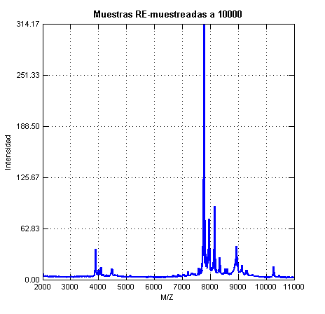

OvarianCDPostQAQC
clear all; close all; clc
addpath('E:\Dropbox\Tesis\Toolbox')
fprintf('Leyendo datos del Grupo CANCER\n')
cd('E:\Dropbox\Tesis\DATOS SIN PROCESAR\OvarianCD_PostQAQC\Cancer')
[datoG1, nG1] = CargarDatos();
fprintf('Leyendo datos del Grupo NORMAL\n')
cd('E:\Dropbox\Tesis\DATOS SIN PROCESAR\OvarianCD_PostQAQC\Normal');
[datoG2, nG2] = CargarDatos();
cd('E:\Dropbox\Tesis');
[MzRemG1,IntenRemG1] = Remuestreo(datoG1,nG1);
[MzRemG2,IntenRemG2] = Remuestreo(datoG2,nG2);
clear datoG1 nG1 datoG2 nG2
IntenRemG1G2 = vertcat(IntenRemG1,IntenRemG2);
VMzG1G2 = mean((vertcat(MzRemG1,MzRemG2)));
clear MzRemG1 MzRemG2
[IntensCBG1G2 ] = CorreccionLineaBase( VMzG1G2,IntenRemG1G2);
P = [4050 4650 8050 8450 9300];
[IntensAlinG1G2] = alineacion( VMzG1G2,IntensCBG1G2);
[ IntenNormG1G2 ] = normalizacion( VMzG1G2,IntensCBG1G2 );
[MxIntenG1G2]=suavizadoSavitzkyGolay( VMzG1G2,IntenNormG1G2 );
graficas_preprocesamiento(VMzG1G2',IntenRemG1G2',IntensCBG1G2',IntensAlinG1G2',MxIntenG1G2')
EtiqG1= repmat('Cancer',length(mean(IntenRemG1')),1);
EtiqG1 = cellstr(EtiqG1);
EtiqG2 = repmat('Normal',length(mean(IntenRemG2')),1);
EtiqG2 = cellstr(EtiqG2);
datosG1G2=MxIntenG1G2;
cd('E:\Dropbox\Tesis\DATOS PROCESADOS')
save OvarianCD_PostQAQC.mat datosG1G2 EtiqG1 EtiqG2 VMzG1G2
clear all
load('OvarianCD_PostQAQC.mat')
cd('E:\Dropbox\Tesis');
Leyendo datos del Grupo CANCER
1 2 3 4 5 6 7 8 9 10 11 12
13 14 15 16 17 18 19 20 21 22 23 24
25 26 27 28 29 30 31 32 33 34 35 36
37 38 39 40 41 42 43 44 45 46 47 48
49 50 51 52 53 54 55 56 57 58 59 60
61 62 63 64 65 66 67 68 69 70 71 72
73 74 75 76 77 78 79 80 81 82 83 84
85 86 87 88 89 90 91 92 93 94 95 96
97 98 99 100 101 102 103 104 105 106 107 108
109 110 111 112 113 114 115 116 117 118 119 120
121
Leyendo datos del Grupo NORMAL
1 2 3 4 5 6 7 8 9 10 11 12
13 14 15 16 17 18 19 20 21 22 23 24
25 26 27 28 29 30 31 32 33 34 35 36
37 38 39 40 41 42 43 44 45 46 47 48
49 50 51 52 53 54 55 56 57 58 59 60
61 62 63 64 65 66 67 68 69 70 71 72
73 74 75 76 77 78 79 80 81 82 83 84
85 86 87 88 89 90 91 92 93 94 95
1 2 3 4 5 6 7 8 9 10 11 12
13 14 15 16 17 18 19 20 21 22 23 24
25 26 27 28 29 30 31 32 33 34 35 36
37 38 39 40 41 42 43 44 45 46 47 48
49 50 51 52 53 54 55 56 57 58 59 60
61 62 63 64 65 66 67 68 69 70 71 72
73 74 75 76 77 78 79 80 81 82 83 84
85 86 87 88 89 90 91 92 93 94 95 96
97 98 99 100 101 102 103 104 105 106 107 108
109 110 111 112 113 114 115 116 117 118 119 120
121
1 2 3 4 5 6 7 8 9 10 11 12
13 14 15 16 17 18 19 20 21 22 23 24
25 26 27 28 29 30 31 32 33 34 35 36
37 38 39 40 41 42 43 44 45 46 47 48
49 50 51 52 53 54 55 56 57 58 59 60
61 62 63 64 65 66 67 68 69 70 71 72
73 74 75 76 77 78 79 80 81 82 83 84
85 86 87 88 89 90 91 92 93 94 95
